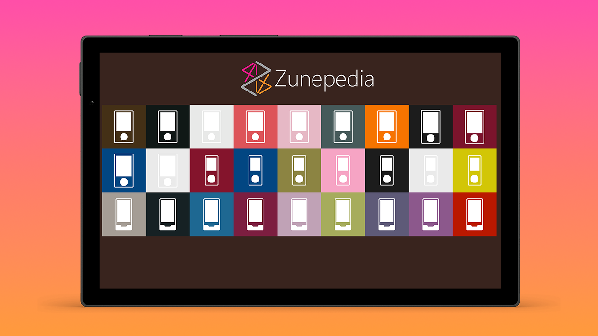

Zunepedia Fifth Anniversary

Five years ago, in September 2021 I released Zunepedia, an unofficial photographic journey about the Zune devices, software and services along with the community that keeps it alive to this day. Zunepedia celebrated the then fifteenth anniversary of the announcement of Zune and covers each generation of Zune with photography and details of the devices, the software and social elements along with photographs of collections kindly provided by the community. Zunepedia came from a collection of press resources of images, details and more that I had collected over the years and had a keen interest in the devices, getting the second-generation Zune 80 and third-generation Zune HD myself. I also supported Zune with software on the web, using the legacy web-based technology of Silverlight with the original version of ZuneCardr which enabled Zune Cards from Zune Social to be saved as images and then synced with a Zune or put online to be shared with others, then later becoming a Windows Phone application that brought Zune Cards from Zune Social exclusively to Windows Phone.
Zunepedia was inspired by the many posts on social media in the years since the devices were no long available and decided to take on the challenge, with very little design skills, of putting a digital coffee table book together to showcase the unique elements of Zune from devices and designs from artists combined in new and interesting ways along with being able to showcase my own contributions and the collections of those in the community. In the five years since it was first published Zune made a small comeback when it was featured prominently in the 2023 film, Guardians of the Galaxy Vol. 3 which included bringing back the original website, although no longer available again, it was great to see more buzz for Zune again. This year marks the twentieth anniversary of Zune being originally released and was a good excuse to update and refresh parts of Zunepedia.
Zunepedia has been updated for the fifth anniversary of its release and the twentieth anniversary of the release of Zune with new front and back cover art, this included fixing an issue I didn't understand at the time with the original graphics I created depicting the various models and colours of the Zune, where the rounded corners looked wrong, but later learned how this worked to created corrected images, along with sharing this insight on LinkedIn which actually became my second most popular social media post of all time! I also updated some of the wording including the acknowledgements, foreword, epilogue and about section. There's also a refreshed website, so to download Zunepedia and more visit zunepedia.com.